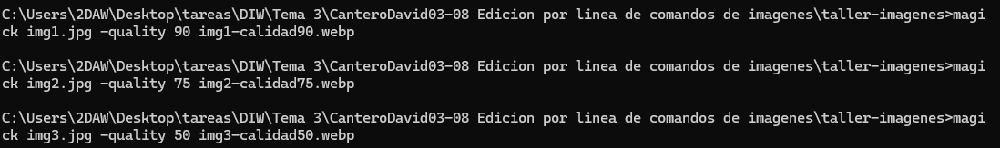
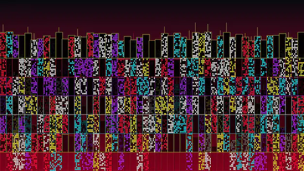
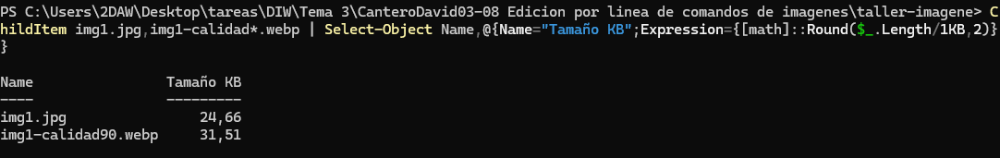
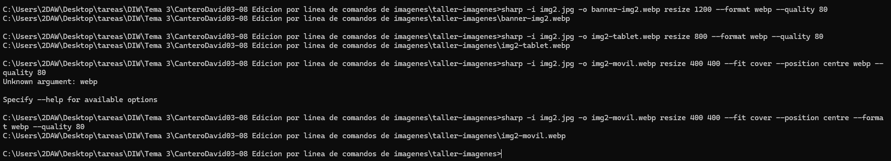
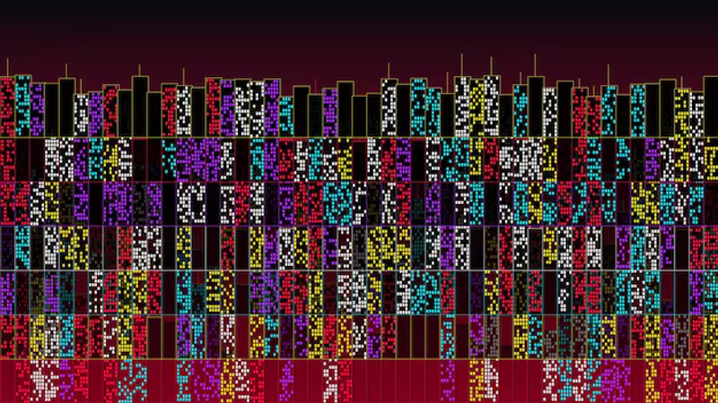
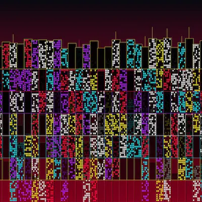
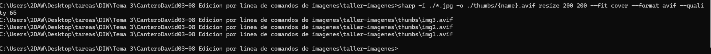
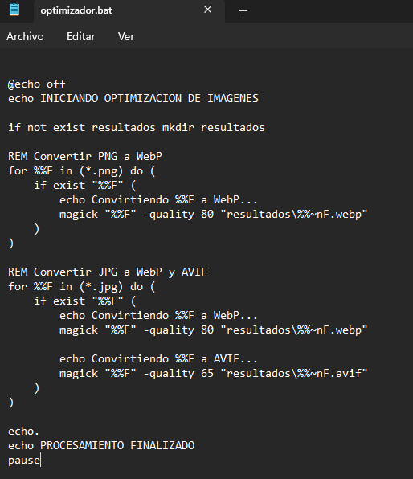
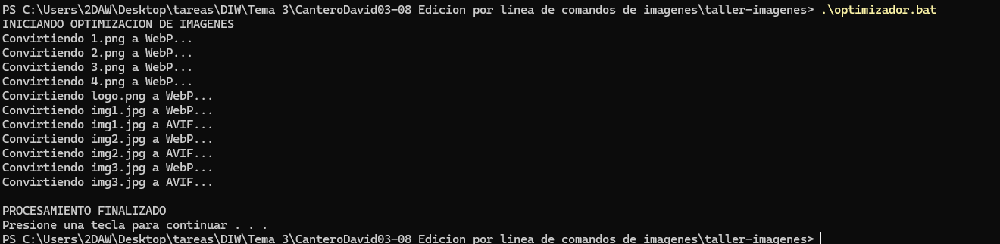

03-08 Edicion por linea de comandos de imagenes
Ejercicio 1: Comparativa de Rendimiento e Impacto (ImageMagick)


Pregunta de análisis: Compara el tamaño en KB de los tres archivos finales frente al archivo
original. ¿Cuál ofrece el mejor equilibrio entre calidad visible y peso?

Ejercicio 2: Canal de Procesamiento Responsive (Sharp CLI)

Escritorio
Tablet

Móvil

Ejercicio 3: Automatización de Miniaturas para Catálogo



Ejercicio 4 : Script de Despliegue Masivo

Ejecutarlo
